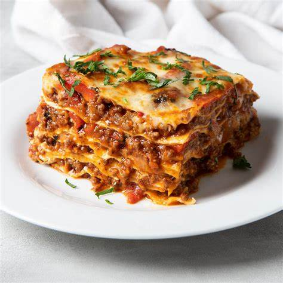

home
cooking
ODIN recipes
Meat Lasagna
A light version of the INDEMODABLE lasagna !

Ingredients:
- 1 pound ground porc
- ¾ pound lean ground beef
- ½ cup minced onion
- 2 cloves garlic, crushed
- 1 (28 ounce) can crushed tomatoes
- 2 (6 ounce) cans tomato paste
- 2 (6.5 ounce) cans canned tomato sauce
- ½ cup water
- 2 tablespoons white sugar
- 1 ½ teaspoons dried basil leaves
- ½ teaspoon fennel seeds
- 1 teaspoon Italian seasoning
- 1 ½ teaspoons salt, divided, or to taste
- ¼ teaspoon ground black pepper
- 4 tablespoons chopped fresh parsley
- 12 lasagna noodles
- ¾ pound mozzarella cheese, sliced
- ¾ cup grated Parmesan cheese
Steps:
- In a Dutch oven, cook sausage,
ground beef, onion, and garlic
over medium heat until well browned.
Stir in crushed tomatoes, tomato paste,
tomato sauce, and water. Season with
sugar, basil, fennel seeds, Italian
seasoning, 1 teaspoon salt, pepper, and
2 tablespoons parsley. Simmer, covered,
for about 1 1/2 hours, stirring
occasionally.
- Bring a large pot of lightly salted
water to a boil. Cook lasagna noodles
in boiling water for 8 to 10 minutes.
Drain noodles, and rinse with cold water.
- Preheat oven to 375 degrees F (190 degrees C).
- To assemble, spread 1 1/2 cups of meat sauce
in the bottom of a 9x13-inch baking dish.
Arrange 6 noodles lengthwise over meat
sauce. Spread with some mozarella chesse.
Spoon 1 1/2 cups meat sauce over mozzarella, and
sprinkle with 1/4 cup Parmesan cheese.
Repeat layers, and top with remaining
mozzarella and Parmesan cheese. Cover
with foil: to prevent sticking, either
spray foil with cooking spray, or make
sure the foil does not touch the cheese.
- Bake in preheated oven for 25 minutes.
Remove foil, and bake an additional 25
minutes. Cool for 15 minutes before
serving.